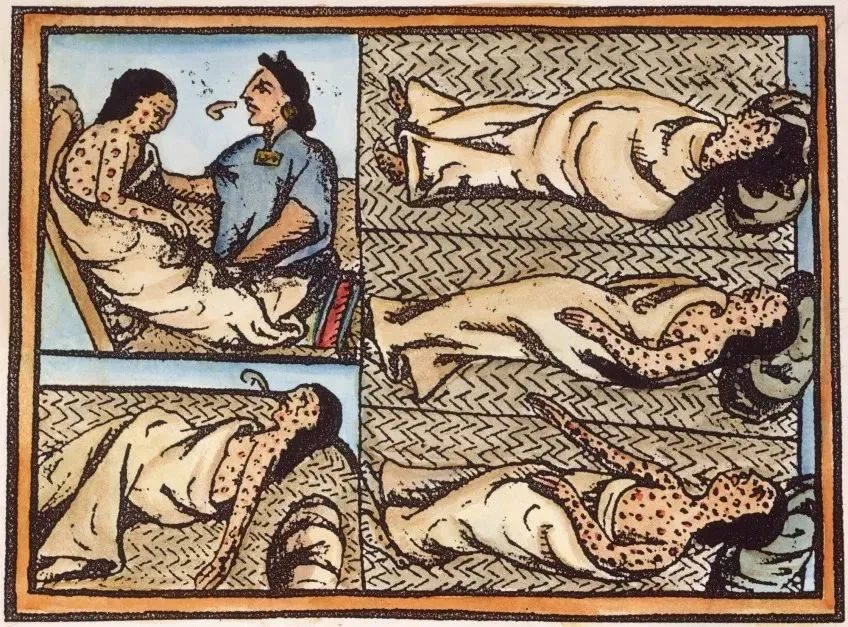
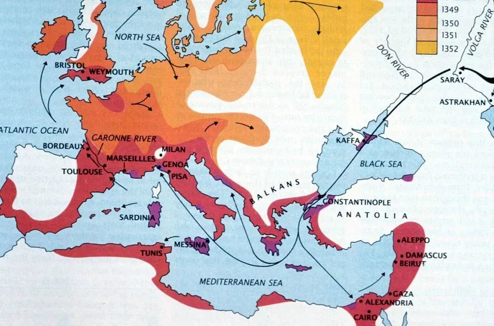

收录于合集

作品简介
原标题： 传染病与大国兴衰——基于历史实例的研究
作者： 王文，中国人民大学重阳金融研究院执行院长。
来源： 《政治学研究》2021年第2期。
文章导读
新冠疫情大流行凸显了传染病对我们生活方方面面的影响，然而，“看不清、摸不着”的传染病毒，对社会变迁乃至大国兴衰的影响，却长期未能被重视。其实，传染病大流行直接影响大国兴衰，在历史上并非罕见之事，例如雅典瘟疫对伯罗奔尼撒战争走向的影响、疟疾和鼠疫对罗马与蒙古帝国的冲击、殖民者携带的天花病毒对美洲阿兹特克帝国和印加帝国的毁灭型打击。相比于饥荒、战争，瘟疫对国家兴衰的冲击更容易被忽视。而事实却是，在被称为“极端年代”的20世纪中，丧命于传染病的人数竟是战争死亡人数的14倍。
本文回顾与梳理了国际关系学界对传染病变量的认知演进进程，总结了历史上传染病影响大国兴衰的三大规律：传染病在热带易爆发的自然特征，抑制了大国在传染病易发区域的成长；大流行病一旦失控，会极大削减人口，导致社会内乱、国力衰落甚至大国崩溃的结局。相反，大流行病应对得当，则将顺利促进一个国家的可持续崛起；大流行病极可能危及大国领导人的性命，增加大国兴衰的变数。
作者认为，21世纪中传染病依然持续构成对国家安全的巨大威胁，对于发展中国家来说尤甚。以往国际关系研究相对忽视传染病的影响，并将其视为大国博弈的边缘化议题。但是，传染病防治不仅关乎国民安全保障，同时也提供了一种超越冲突与战争的大国兴衰的解释视角，提示我们大国博弈存在“共生性”的可能。欧亚系统科学研究会特推送本文，供读者思考。
文章原刊于《政治学研究》，2021年第2期，仅代表作者本人观点。
摘要
**
**
大国兴衰是一个“对所有地球上的居民都具有实际意义的问题”。经济学、国际关系学都有经典著作，如经济学家曼瑟·奥尔森的《国家的兴衰》、戴维·兰德斯的《国富国穷》、国际政治学家保罗·肯尼迪的《大国的兴衰》、艾米·蔡的《大国兴亡录》，这些著作从政治、军事、经济与社会等宏大视角探究大国崛起与衰落的原因、进程与演变逻辑，但鲜有从传染病毒的微观视角出发的研究巨著。2020年，新冠肺炎疫情席卷全球，对国家发展与世界形势造成始料未及的冲击，包括亨利·基辛格在内的许多著名国际政治学家都认为新冠肺炎疫情具有划时代的全球意义，更是引发大国霸权更替的猜想。这促使人们从理论层面思考传染病影响大国兴衰的历史规律与逻辑探究，重新审视长期被忽视的微小变量“病毒”的巨大冲击力。
本文梳理了百年来医学界、历史学界、国际关系学界对传染病研究的思想谱系，从大国博弈事例出发， 挖掘传染病易发地域大国崛起的低概率性、大流行病直接导致大国衰亡的高概率性以及领导人感染后的大国变数等三条历史规律，将传染病对国家兴衰的作用分为快速毁灭型、长期干扰型、推动变革型等三个类别。 笔者认为，发掘传染病对大国兴衰的历史传导规律，对更系统地认识与探索国家发展的动力具有重要意义，也有助于寻找中美关系“修昔底德陷阱”的化解之道，更对拓展国际关系的分析框架与研究变量、从人类命运共同体的角度重新建构大国博弈的未来叙事具有现实意义。
01
传染病: 20世纪末逐渐兴起的国际研究变量
从生命存在形式看，人类其实寄居在一个病毒的星球。病毒一直对文明进程与国兴衰发挥着意想不到的作用。数千年的大国兴衰史，军事武器、经济金融、政治人物、社会组织的作用当然是巨大的，但许多时候它们的影响力远不及那些肉眼看不到的传染病毒。哈佛大学医学院已故教授汉斯·辛瑟尔曾说， “刀剑、弓箭、机关枪甚至是烈性炸药，对一个民族的命运所造成的影响，都远远不及传播伤寒的虱子、传播鼠疫的跳蚤和传播黄热病的蚊子。” 如表 1 所示，14世纪黑死病造成1/3当时欧洲人口的死亡，1918年西班牙大流感造成超过5000万—1亿人口的死亡，被视为“极端年代”（霍布斯鲍姆语）的20世纪，传染病致死的人数是战争死亡人数的14倍。大流行病（Pandemic）对国家发展与民众生活的冲击力，常常超过一场战争、一次金融危机，见表 1 。
表 1：人类历史上最惨重的战争与传染病死亡对比
数据来源：ineitrongWorld Health Organization,World Health Report 2000.
数千年来，人们习惯把传染病与自然的神秘力量联系起来，误认为病毒是恶魔、上苍、星象或某些恐怖的未知事物化身。19世纪下半叶，病原生物学者们提出“病因-环境- 宿主”模式，破除了早期“病毒未知说”，为传染病防治奠定了现代科学基础，深化了人类应对传染病的能力。1935年，细菌学和免疫学教授汉斯·辛瑟尔的《老鼠、虱子和历史：一部全新的人类命运史》一书，首次将病理学和历史学结合，以寄生病菌、虱子、斑疹伤寒为主角，尝试从传染病的侧面重新阐释人类的起源、发展以及未来畅想。该书出版后，广受好评。著名历史学家威廉·麦克尼尔评论该书“搜集一些表现疾病历史重要性的史料”，“极具可读性”，但“ 这类著作未能试图将疾病史纳入更宏大的人类历史的背景下考察……仍将疫病的偶然暴发视为对历史常态突然而不可预测的扭曲。 ”威廉·麦克尼尔1976年出版其重要代表作《瘟疫与人》，首次系统地叙述传染病对人类历史演进的规律性影响。该书对后来医学家、历史学家、政治学家、社会学家研究病毒与人类、国家的关系启发巨大，如《枪炮、病菌与钢铁：人类社会的命运》等聚焦传染病与人类命运研究的宏大著作，以及《大流感：最致命瘟疫的史诗》《逼近的瘟疫》等聚焦在某个病毒种类或事件影响世界变迁的微观层面的著述先后问世，极大提升了人类对传染病历史作用的认识。
然而，长期以来，只有医学与历史学界将传染病视为干扰人类发展的变量，以研究国家利益为核心内容的国际关系学者，似乎并没有在这场“敌对的、物种之间的民族主义无情战争”中找准防御对象。 “1990年以前，无论是哪一种类型的传染病防控，国际关系学领域都没有给予重视。” 虽然早在修昔底德《伯罗奔尼撒战争史》一书就有数页论述瘟疫逆转了雅典与斯巴达争霸固有轨迹，但自1919年学科正式建立以来，国际关系学者长期以“乐观主义的情绪”，认为“强大的医学武器，包括抗生素、抗疟药和疫苗，发动了一场战争，消灭了病毒、细菌和寄生虫敌人……并预测在千禧年到来之前实现人类即便最贫穷国家都能实现健康转型的目标”，进而低估了传染病对国际形势与大国兴衰的影响力。另一方面，国际关系学界深受肯尼思·沃尔兹影响，需要在理论研究中选择并突出那些有规律、可预测、可界定、且可控的变量，如果过于强调传染病在国家兴衰中的重要性，那么无疑会削弱国际关系理论对国家互动规律的解释力。
冷战结束以后，世界战争的威胁感下降，传染病的冲击力凸显。1990年全球4997万人死亡，其中传染病死亡人数达1669万（占34.4%）,战争死亡32.2万（占0.64%）。这样的鲜明反差引起了一些国际关系学者的注意，开始探讨传染病严重威胁国家主权、国际安全的理论逻辑。1995年，美国内华达大学政治学教授丹尼斯·皮瑞杰就公共卫生、治理与人类福祉的关系进行探讨，从“微生物”中衍生了一个新概念“微安全”（microsecurity），推动安全定义的微观化，首次将传染病纳入到政治学的研究范畴。1996年，美国《外交》杂志刊发《传染病的回归》一文，国际关系学一流期刊首次刊登传染病与国际安全关系的论文明确警示， 传染病的时代一去不复返的预估“高兴得太早了”。 2002年，美国科罗拉多学院国际政治学教授安德鲁·普里斯- 史密斯教授的《国家的健康：传染病、环境变化与对国家安全和发展的影响》一书，是首部剖析传染病与国际关系的理论专著。他谈道，“这本书提出这样的观点：新出现与再现的传染病是对国家能力的压力源（stressor），产生对国家繁荣与安全的巨大破坏。 国际关系理论存在的最初理由，是建立有助于避免因战争而造成过早丧失生命与生产力的模式。……但传统的安全概念却忽略了人类痛苦和死亡的最大根源：围绕人类物种周边的微生物”。 在其2009年专著《传染病与混乱：全球化时代的疾病、生态与国家安全》中，史密斯提出传染病与国家安全的五大理论假设：一是传染病可能会成为一种压力源的变量，损害主权国家的繁荣、合法性凝聚力；二是传染病的大流行将加剧国家间经济与政治的不协调；三是只有一些被重点记录的传染病才会威胁国家安全，有些病毒则不会产生安全威胁；四是战争将产生“战争瘟疫”，助长军队内部的传染病扩散，导致国内疾病负担的增加；五是“健康安全”范式以哲学式的方式融合了现实主义与自由主义的理论内涵。
21世纪初，艾滋病、SARS、埃博拉病毒等传染病不断冲击国家安全，从公共卫生、非传统安全角度研究世界形势的国际关系学者逐渐增多。对传染病的认知出现重大转折，传染病不再只是被视为公共卫生问题，而是被认定为安全问题。大国兴衰的史实开始被重新解构。2017年美国俄克拉何马大学教授凯尔·哈珀在其被广泛赞誉的 《罗马的命运：气候、疾病和帝国的终结》 一书中，针对伟大的英国历史学家爱德华·吉本在其代表作《罗马帝国衰亡史》中就“罗马衰落是其无节制的扩张”的理论纰漏，把帝国兴衰与生物因素（细菌与病毒造成的灾难性瘟疫）、气候变迁连结起来，“从罗马人自己难以理解也无法想象的尺度上来看，帝国衰落是大自然战胜人类野心的胜利。……细菌和病毒起着重要的作用”。
国际关系研究思维范式在传染病领域的拓展，为公共卫生安全成为联合国千年发展目标提供了理论依据。2020年新冠肺炎疫情全球肆虐，进一步推动学术界对国家脆弱性的反思。强大的军事力量在传染病面前无计可施，各国应学会与大流行病共存等观点，已成为越来越多学者的共识。 有学者甚至提出：新冠肺炎疫情是否会对世界产生像黑死病对欧洲那样的持续且深远的影响？
可见，全球公共卫生安全的形势仍相当严峻。2020年新冠肺炎疫情全球蔓延只是传染病冲击人类社会的又一次严重表征。作为最早控制住疫情蔓延的大国，中国的学术界理应对后疫情时代的全球公共卫生治理、传染病频繁爆发的背景下如何加强国际合作、重构大国兴衰研究等问题，提供更多理论创新与历史探索。
不过，在中国，国际关系理论研究长期忽视影响国际关系的传染病变量。2003年“非典”在中国爆发，中国学者才开始从非传统安全的角度思考国家发展，论述传染病威胁全球公共安全与全球化进程的状况。总体而言，中国学界对传染病的国际政治影响研究，主要围绕着全球公共卫生治理、国家宏观政策等领域做了初步的现实概括与分析，多局限于应急性研究，缺乏历史规律的深度总结，也缺少长期性、系统性、战略性的研究成果。
由此可见，传染病是20世纪末以来逐渐兴起的国际关系研究变量。回顾近30年来全球国际关系学界对传染病的研究脉络，可发现三处较为明显的进展与不足：
第一，国际关系学者逐渐认识到传染病对国家安全的重要影响，但对传染病的全球冲击力与历史规律性研究不足，既没有从大国兴衰历史进程的角度进行归纳总结，也没有充分认识到传染病可能颠覆或逆转国家发展轨迹、国际政治运转、文明发展进程的重大作用。
第二，国际关系学的研究对象已增加了传染病的内容，但研究主体是国家、研究重心是军事与经济安全、基本逻辑是国力竞争与国际博弈的国际关系思维范式并没有被改变。传染病蔓延期的国际合作，往往是各国被迫而为之的战略权宜，而非思维惯性与现实定律。
第三，个人安全仍是传染病防治的主要目标，传染病冲击国家实力的预防性战略并未受到足够重视，国家尤其是全球大国尚未从共同体主义的逻辑去承担全球卫生安全的重大责任。比如，特朗普执政以来，美国撤销白宫传染病应对办公室，关闭多个美国公共卫生领域的全球办事处，削减公共卫生预算，直接导致2020年新冠肺炎疫情爆发后美国抗疫全面失败与国际抗疫的合作不足。
可见，传染病与大国兴衰的规律需要重新梳理，传染病对国家实力的影响因素需要重新评估，大流行病尤其是2020年以来新冠肺炎疫情造成的全球伤害，应该促使人们重新思考人类、生态环境、全球治理与大国合作。 中国提出的人类命运共同体的理念应该得到更多国际社会尤其是发达国家的重视。
02
传染病影响大国兴衰的历史规律
在漫长的生物进化过程中，人只不过是后来者。据统计，微生物的种类约有1万亿种，在地球上生活了35亿年以上。地球是微生物的世界，数百万年前，人类通过改造陆地、海洋物种的演进规则而使地球进入“人类世”（Anthropocene）。按照马尔萨斯定律，大自然创造了人类赖以生存的资源，以自身的节奏改变人类社会谋生的条件。人口会随着大自然反复无常的变化（如天灾、病毒等）而收缩或繁衍，建立在人口基础上的国家与社会随之兴衰。由此看，人类文明史“也是一部同灾难和疾病的斗争史”。在这个进程中，微生物尤其是病毒对人类社会与大国兴衰发挥着不可估量的决定性作用。传染病蔓延侵蚀着人的安全，通过杀死生命进而造成农业停播、粮食减产、经济低迷、兵源匮乏、军力减弱，从而改变大国命运。 由于传染病第一伤及对象是人，而非国家，学术界通常会忽视国家与传染病之间的直接传导逻辑。
事实上，人类所生存的生态系统依靠动态平衡。 在威廉·麦克尼尔梳理的病理学与历史变局逻辑中，人类一直介于“病菌的微寄生”（包括病毒）和“大型天敌的巨寄生”（包括统治者、自然界）之间的平衡中。 人体是微生物的重要宿主之一，而人类又寄宿在大自然界。人类与其他生命关系中的互动，如狩猎捕食、自相残杀、农业生产、人口增长、区域流动等，都有可能会产生“微寄生”“巨寄生”的关系失衡。“微寄生”的关系失衡，导致寄生物寻找人体宿主的转移。有时寄生物的转移是正常现象，例如人体的新陈代谢；有时寄生物的迁移会造成人体规律性活动的紊乱，源于病毒的传染病蔓延是典型例子。“巨寄生”的关系失衡，则容易导致战争、大火、暴雨、洪灾以及其他突发灾难等。人体免疫力下降、自然的有机调节会汇聚成某种历史演进的合力，形成社会、国家、文明的重组。
换句话说，人类历史进程，传染病毒是不可忽视的变量，通过“微寄生”失衡，影响到人类与“巨寄生”之间的平衡关系，产生领袖伤亡、族群迁移、政体建崩、产业转型、科技进步、民族盛衰、战争胜败、社会荣枯、文化兴灭与文明演进等历史变局。这正是传染病与大国兴衰的基本逻辑链条。
如表 2 所示，从史实看，广为人知的传染病与大国兴衰的事例在历史上常常发生。这些案例为大国兴衰的研究提供了丰富的非传统素材，更为国际关系研究范畴的拓展奠定了充足的历史实例基础。基于这层实例，笔者试着简要地归纳出三层历史规律假设。
表2：影响大国兴衰的主要传染病事件

数据来源：笔者自制
规律一：传染病在热带易爆发的自然特征，抑制了大国在传染病易发区域的成长。
**
**
根据麦克尼尔的解释，人传人的传染病史至少有5000年。考古学家对骨骸遗存的研究，发现了与早期国家兴衰相关的传染病现象。公元前2000年，埃及瘟疫影响法老的长期统治。公元前1200年，埃及木乃伊中发现了钙化的血吸虫卵。古巴比伦《吉尔伽美什史诗》中提到疫灾。中国最早的文字——殷墟甲骨文已经有了“虫”“蛊”“疟疾”等多达50种不同的疾病卜辞和解释。《圣经·撒母耳记》中记载着以色列人因瘟疫被腓力斯人打败的故事。按疾病史的记载，血吸虫病与疟疾是迄今被发现的最古老传染病，是随着人类与其驯养动物共同生活模式的兴起而逐渐出现的。
按麦克尼尔的推测，非洲的热带雨林孕育了人类远祖，其充足的水分加快了寄生物在宿体之间的转移频率。传染病泛滥的地方，更容易使人类出现无力、疲怠的症状，而无法胜任劳作的体力任务，也更无法抵御大型天敌的进犯（如组织起来的其他掠食者的武力进攻）。 这就能解释为何人类通过长途迁徙、生存方式的重组后，在温带出现早期国家与文明的概率更高，而热带地区领衔同时代国家、社会与文明的概率更低。 由此看，历史上的大国兴盛通常在温带，与人类较有效地规避传染病频发的区域，有着长期被忽视的关系链条。
**
**
规律二：大流行病一旦失控，会极大削减人口，导致社会内乱、国力衰落甚至大国崩溃的结局。相反，大流行病应对得当，则将顺利促进一个国家的可持续崛起。
**
**
英国历史学家卡特赖特曾论述：“人类有三个规模不断扩张的大敌：瘟疫、饥荒和战争。瘟疫源于人体的失调，饥荒源于作物和牲畜的失调，战争一般被认为是大众精神的失调。” 相比于饥荒、战争，瘟疫对国家兴衰的冲击更容易被忽视。 史实证明，大流行病疫情导致人口的大量减少，引发社会混乱，冲击经济运行，削弱国家实力；冲击烈度越大，国家衰亡的速度就越快。公元前3000年，在古代美索不达米亚平原，苏美尔人迅速被闪米特人取代，与传染病密切相关。公元前430年，一场灾难性的病变杀死了1/4雅典军队，直接导致盛极一时的雅典在伯罗奔尼撒战争中战败。疟疾使罗马人长期身体虚弱，曾具有强大战斗力的罗马军力组成更多来自于外族部落，加速罗马帝国东西分裂。在古代中国，人口从公元2年的约1230万户急剧下降到742年的890万户。期间东汉王朝结束，中国陷入长达300多年的南北割据局面中。14世纪，鼠疫对蒙古帝国的冲击巨大；中国人口从1200年（蒙古入侵之前）的1.23亿减少到1393年的6500万，加速蒙古帝国崩塌进程。1518年西班牙远征军将大陆之外的天花带入美洲大陆，位于墨西哥一带的阿兹特克帝国人口从2500万—3000万衰减到50年后的300万，帝国随之灭亡；印加帝国也因天花而崩塌。传染病对于印第安人而言，近似灭顶之灾。1812年，拿破仑军队进攻莫斯科，遭遇斑疹伤寒和痢疾，导致兵败大撤退，拿破仑帝国随之瓦解。

感染天花的阿兹特克人，图源：互联网
实例证明，传染病比军事战争对国力削弱具有更大的创伤力。传染病可以通过改变生存环境、削减人口数量、阻断经济活动、引发社会失序、诱发国内动乱等诸多方式，削弱国家能力，而国家能力的减弱又反过来影响传染病防控的有效性。两者之间的相互制约、相互影响，直接决定了大国的全球地位。
如表 3 所示， 1853年克里米亚战争中，患病人数、因病致死人数远远高于军事受伤及致死的人数。 可见，在大国兴衰史上，即使一个实力强盛的帝国能在战争中屡获胜绩，但一旦不能抵御传染病的侵蚀，军事战果或许也无法保全。相反，一个崛起的大国若能未雨绸缪，成功应对大流行病的冲击，则将促进本国崛起之势。1817年印度发生严重霍乱，1831年霍乱转至英国，导致英国13万人丧生。印度更是在1/4世纪中超过2500万死于霍乱。当时英国人通过整治城市、清理工业区、完善街道排污体系等方式，成功地“关闭霍乱阀门”,引领工业革命后第一轮全球城市化，助推了“日不落帝国”的形成。
表3：克里米亚战争（1853年）军事死亡与传染病死亡对照
数据来源：汉斯·辛瑟尔:《老鼠、虱子和历史:一部全新的人类命运史》，第177页。
规律三：大流行病极可能危及大国领导人的性命，增加大国兴衰的变数。
**
**
一国领导人的健康状态对该国对外政策的影响极大，领袖突然病故更有可能颠覆国家走向。 公元前429年，雅典领导人伯里克利死于瘟疫， 加之大量城民受感染死亡，雅典士气消沉，在与斯巴达的希望霸权斗争中最终战败 。公元前323年，亚历山大帝因感染上西尼罗河病毒而亡， 人类历史上第一个横亘欧亚非三大洲的帝国、也是当时世界上领土面积最大的国家亚历山大帝国随之瓦解。公元180年，罗马皇帝马可·奥略留感染瘟疫而亡，对罗马帝国冲击巨大。 1518年天花传入美洲大陆，阿兹特克帝国民众视其为神力与天神的惩罚，用乱石将皇帝蒙特祖玛二世砸死，帝国很快被西班牙殖民者征服。1815年，长期受梅毒、疥疮、急性传染性肝炎等疾病影响的拿破仑长期有嗜睡、慵懒等症状，导致在滑铁卢战役屡屡错失战机，无法力挽法兰西帝国之狂澜。 二战史学界公认，希特勒发动第二次世界大战，甚至种族大屠杀，与其早年感染梅毒相关。1917年，遗传“甲型血友病”的末代沙皇唯一直系继承人阿列克赛无力继承皇位，俄国封建君主制走向终结。
按历史唯物主义的逻辑，历史演进是由参与历史事件的所有合力决定。国家元首感染身亡或使一项事业功败垂成，或令一个国家急转直下，有时也会使国家发展出现新的生机。无论如何，从历史实例看，领导人受感染的确影响着大国兴衰的轨迹。
综上所述，传染病对大国兴衰的影响可大体分为三种类型：
**
**
一是快速毁灭型，即传染病的蔓延在短期内令大国盛极而衰甚至崩溃。 公元前5世纪中叶，雅典利用其海上优势，控制了东地中海地区战略交通要道，形成了古代历史上第一个大规模的海上霸权雅典帝国。公元前430年，一场不知病因的瘟疫在雅典大规模爆发，“雅典城里，死神肆虐；城外田地，惨遭蹂躏”，“染上瘟疫的人，像羊群一样地死去”。此后，雅典迅速走向衰败。在16世纪欧洲人征服美洲的进程中，“具有相当免疫力的入侵民族把疾病传染给没有免疫力的民族。天花、麻疹、流行性感冒、班疹伤寒、腺鼠疫以及其他一些在欧洲流行的传染病，……起了一种决定性的作用”，不到两年间，就征服了军队数量500倍于己的中美洲最强大帝国——代表着古墨西哥文明最高水平的阿兹特克帝国。
二是长期干扰型，即传染病导致国家发展长期处在困境、停滞直到全面衰败。 以罗马帝国为例，奥古斯都（公元前27年—公元14年）统治时期开始的大规模早期城市化进程以及帝国内部的贸易交通体系，助长了瘟疫的传播速度。公元165年由天花引起的“安东尼瘟疫”，夺走了约700万人的性命，占帝国总人口的10%—20%。而帝国最血腥战役时哥特人入侵罗马，才仅有2万罗马军人阵亡。这场瘟疫导致帝国人口倒退一个半世纪。以扩张征服为目标的中央集权式帝国逐渐沦为地方行省权力巨大、中央权威削弱的地域分权式帝国。公元249年“西普里安瘟疫”出现，使罗马帝国核心力量无法继续支撑，整个帝国长期陷入无政府状态，此后东、西罗马帝国分裂（公元476年）。公元541年爆发的“查士丁尼鼠疫”冲击，直接导致查士丁尼大帝重新统一东西罗马帝国的梦想破灭。此后鼠疫不断间歇性大爆发，东罗马帝国长期低迷，直至走向末日。
三是推动变革型，即传染病的冲击倒逼全民深刻反思，进而促成巨大的国家转型与社会变革。 1347年波及欧洲的黑死病导致1/3欧洲人死亡，英格兰死亡人数更是达到一半。但对当时的人们来说却是一个转折点。“它割断了与过去的联系，带来新时代的曙光。……劳动人民开始理解自己的价值并维护自己的利益，……丧失了对教规的信心，不再相信传统，对信仰产生怀疑……欧洲逐渐从崩溃的边缘恢复，实现了经济振兴和宗教复兴”，促成了后来的文艺复兴，直接推动了16世纪以后的西方崛起。1918年大流感，全球范围内大约有5000万人丧生，甚至可能高达1亿。“这是自然与现代科学的第一次大冲突，有人拒绝屈从于自然的力量，拒绝倚靠神助使自己免遭厄运……开始倡导革新，计划将美国医学从世界发达国家中最落后的变为世界上最先进的”。现代医学的大发展，为此后美国20世纪崛起奠定了强大的基础。

黑死病在欧洲的传播。图源：互联网
不过， 现代科技的发展容易让人们尤其在西方发达国家产生巨大错觉，以为传染病得到了有效控制。 1977年世界卫生组织宣布，天花病毒已根除。次年，联合国所有成员国签署《健康全人类2000年》协定，预言千禧年之前，人类健康状况将发生质的提升，疾病防治的重心转移到了非传染性的所谓“富贵病”上，如心脏病、糖尿病和癌症等。事实是，艾滋病、鼠疫、霍乱、结核病等传染病在二战结束以后的增长速度仍相当快。1945年至1993年，仅艾滋病、结核病、疟疾就夺走了1.5亿人的生命，是同期战争死亡人数（2300万人）的近5倍。所有过早死亡人群的50%以上，都与艾滋病、肺炎、结核病、腹泻病、疟疾和麻疹等六类传染病相关。1998年3亿人感染疟疾，110万人死亡；2000年肺结核夺走170万人生命。更糟糕的是，1973年以来，人类新发现了30多种传染病毒，且病毒变异并产生抗药性的周期远远超出人类研制抗生素的速度。这些传染病严重影响了二战结束后新独立的国家的经济增长与国力提升，对传统强国、现存霸权国的国家安全造成巨大威胁。
03
传染病影响大国兴衰的现代启示
随着近代对外殖民、工业革命以及城市化进程不断受到传染病的侵蚀，欧美国家逐渐将传染病的防治从国内推向国际合作。1851年英、法、俄等12个欧洲国家召开首次国际卫生合作会议，商议烈性传染病——霍乱的防疫措施。1907年，第一份《国际卫生条约》在罗马签订，此后还产生了世界上首个区域性的跨国公共卫生组织：泛美卫生组织。对传染病的重视与防疫合作，为欧美国家早期崛起、领衔现代化的全球进程奠定了良好的公共卫生基础。
1948年国际卫生组织问世。1978年，世卫组织在阿拉木图召开国际初级卫生保健大会，提出人人享有健康的千禧年目标，宣告全球卫生时代的开始。然而，“西方对国境线之外的公共卫生危机不愿承担足够的道德义务”，直到以艾滋病为代表的传染病在发达国家感染人数急剧上升，西方才逐渐开始重视传染病对国家安全、国力发展的威胁。1988年，美国国防部发布报告，论述HIV病毒引发艾滋病对美国国家安全的影响。这是历史上第一份关于传染病影响国家安全、国家发展战略的官方研究报告。2000年1月，联合国安理会首次召开以人类健康为主题的会议，重点讨论艾滋病对国际发展的影响。时任美国副总统戈尔呼吁，安全需要有一个“更创新、更丰富的定义”，需要囊括像艾滋病在内的传染病爆发与复发的内涵。2020年全球肆虐的新冠肺炎疫情，重新规划着国家安全与大国兴衰的未来。 这使麦克尼尔、戴蒙德等历史学家们对传染病冲击人类社会的传统研究有了更多的现实启迪， 也有助于传染病影响大国兴衰的规律总结对各国决策者的战略规划提供更多政策启发。
第一，揭示传染病高发地区的国家发展容易受长期抑制的历史规律，有助于推动21世纪全球公共卫生治理体系的完善，尤其非洲、南亚、大洋洲、拉美等位于热带的一些国家的传染病防治应提上全球安全的更重要议程。
冷战结束以来，发展中国家加速承载发达国家的工业转移，严重打破人类需求和自然界供给之间的平衡。 传染病在地处热带的非洲、南亚、大洋洲、拉丁美洲等国家的冲击烈度、防治难度均加大。然而，直至2014年，全球仍有80%国家（主要是发展中国家）尚未如期做到加强本国传染病侦测和报告能力。 联合国开发计划署（UNDP）评估，传染病对各国经济增长、家庭收入以及工业制造、企业运营都将造成毁灭性的打击，比如，在艾滋病高发国家，家庭收入80%被削减，食品消费额下降15%—30%，义务教育学生的注册率减少20%—40%,年均造成0.5%—1%的GDP额外损失。世界卫生组织《2016年世界健康评估报告》透露，低收入国家前七位死因有五类都是传染病，占死亡总数的63%。传染病高发国家的政府治理能力被极大地削弱，还会引发频繁的社会暴力事件、政治动荡、经济政策失效、军事派系冲突甚至种族灭绝事件。在传染病高发国家，所谓“国家崛起”是“不可能完成的任务”。可见，经济学界、政治学界剖析发展中国家长期发展滞后时仅选取产业、财政、贸易、金融、外交政策等角度是不够的，还应该加上公共卫生与传染病防治的政策研究维度。历史实例表明，大国兴衰的背后或多或少都有传染病影响的因素。这对新兴经济体、后发国家的崛起具有重要的借鉴意义。
第二，发现传染病导致大国衰落的高概率历史规律，有助于认清后疫情时代美国加速衰落的真正原因，更有助于寻找中美关系避免陷入“修昔底德陷阱”之法。
2020年爆发新冠肺炎疫情，中美两个全球大国的防疫合作严重滞后于国际社会的呼吁与全球现实的需求。相反，中美大国竞争在疫情期呈现加剧的趋势。不少学者都认为，新冠肺炎疫情的防疫失效暴露了美国公共卫生防疫能力的漏洞与国家能力的不足，削弱了美国领导世界的软实力，加速了美国霸权的衰落。这再次印证了全球化时代传染病仍有可能导致大国衰落的历史规律。可惜的是，特朗普执政下的美国决策层并没有认清这条铁律，不承认新冠肺炎传染病是损害美国国力、加速美国衰落的最新原因，相反，美国政府不断甩锅中国，把中国当作抗疫失败“替罪羊”，对华发动新冷战，试图凝聚早已分裂的美国社会之团结。直至2021年拜登执政后，才将国内抗疫视为重中之重的任务。
事实上，历史已反复表明， 如果把大国衰落简要地归结为“外敌入侵”的话，那么，传染病才有可能是真正的“战争发动者”和“战争结局的决定者”。 新冠肺炎疫情再次提醒现存霸权国美国与最大崛起国中国，病毒是两国共同的敌人。未来传染病对中美两国的长期威胁，远大于战争。对于霸权国家而言，国家实力的维护不只是保证经济、军事、软实力不被崛起国家超越，更重要的是维护本国人口与国家安全，能抵御大流行病的冲击。中美两国的竞争不在于谁打压了谁，而是比拼“谁更能解决本国的问题”，传染病的防疫是其中非常重要的一环。对此，从传染病的历史规律出发，尽快转换转变国际政治研究范式，更新霸权更替的思考框架，重新审视大国博弈的“共生性”，追求“动态共同进化平衡”，变得越来越重要。若能破题，将推动国际关系本体论、认识论的研究革命。传染病影响大国兴衰的研究将改变国际关系理论的范式，也将高度考验国际关系学者的高超智慧与理论创新水平。
第三，发现传染病感染一国领导人而增加国家变数的历史规律，有助于让各国政治精英进一步加深对传染病防治国际合作的重视，更助推国际社会尤其是大国领导人以共同体主义的高度去担当世界的未来。
在新冠肺炎疫情期，英国首相约翰逊、巴西总统博索纳罗、美国总统特朗普等大国领导人先后被感染。美国白宫、国会山、五角大楼内的多位高官也被感染。虽然领导人、政治精英们在国家优质治疗条件的悉心呵护下，绝大多数都恢复健康，但他们被感染的事例再次警示：病毒不分国界、种族、贵贱和性别。传染病的冲击力颠覆了人们对强大的大国实力的固有认识，边境防御与安保警卫在病毒面前变得形同虚设，大国军力在传染病冲击下也显得无助。可惜的是，人类历史不断重复着传染病冲击大国兴衰、导致大规模国民死亡、大国领导人同样受威胁的悲剧。未来产生像新冠肺炎这样的大流行病的可能性始终存在。任何反智主义、反科学主义都要不得，大国领导人采取任何侥幸心理、摆着权力狂妄的姿态、推行被动防御政策都终将被证明是失当的。
不断有大国领导人被感染的史实与现实还提醒人们， 应该对病毒保持敬畏与谦逊。 世界卫生组织早已提醒，病菌的耐药性与日俱增，“刀枪不入”的“超级细菌”使人类有可能回到无药可救的黑暗年代。未来30年，全球将有3亿人死于耐药性病毒，耐药性病毒将成为人类“第一杀手”。这就要求国际社会尤其是各个大国，应该主动采取有效措施，综合运用法律、财政、行政、税收、科技、外交等手段解决未来传染病带来的巨大威胁，完善全球公共卫生体系。
04
结论
传染病影响大国兴衰的历史规律探索，并不是为了说明传染病是大国巨变的首要原因，而是揭示影响大国兴衰进程中长期被忽视的微观变量。21世纪，大国之间的战争越来越变成模拟演算，大国之间的激烈竞争越来越不像是“你死我亡”的零和博弈，更像是“讨价还价”的长期买卖。相比之下，病毒引发的大流行病对大国国民的人身健康伤害、社会稳定干扰、经济增长停滞是实实在在的。传染病爆发具有偶然性，但对大国兴衰的持续影响却具有必然性。以往国际关系研究中忽视传染病的变量研究，即使21世纪以来传染病已被纳入到安全研究范畴内，其定位仍被划入到“低级政治”，并且被视为大国博弈的边缘化议题。这种趋向需要扭转。如何从长远防治传染病的大规模爆发并维持大国崛起的可持续性，亟待国际关系理论研究范式的变革。
大国崛起如同走长征路。 国家对传染病的防治，是这条漫长的长征路上对国民安全保障收益率最高的一项战略性投资。 按《柳叶刀》杂志发表的《全球健康2035》研究报告，健康投资在一代人时间里可获得超过成本9—20倍的收益。健康的国民群体是经济发展、社会稳定的必要基础，也是实现国家崛起与民族复兴的重要目标。没有什么比生命更重要，这是中国在2020年抗击新冠肺炎疫情最早取得阶段性胜利、保持民族复兴之势的哲学文化源泉。没有良好的公共医疗卫生服务与疾病防控体系，国家公共安全就会频现危机，国家可持续发展与全球大国地位就没有保障。诚如比尔·盖茨所言：“最有可能让超过1000万人丧生的唯有自然发生或生物恐怖主义引发的传染病”，这对中国捍卫核心利益、推动国家可持续崛起具有重要的启示意义。
我国领导人在第73届世界卫生大会视频会议开幕式上的致辞中指出，“人类终将战胜疫情，但重大公共卫生突发事件对人类来说不会是最后一次。”全球化时代，人类已经是命运共同体，2020年新冠肺炎疫情再次暴露了人们对传染病的历史剖析与规律总结的短板与不足。各国团结合作是战胜诸多重大疫情的最有力武器。这不仅是20世纪以来世界各国抗击艾滋病、埃博拉、禽流感、甲型H1N1流感等跨国传染病的重要经验，也是探索传染病与大国兴衰历史规律得出的人间正道。可见，改变国际政治观念和治理方式，加强政府、学术界、社会之间的通力合作， “创造一种新的流行病防疫样式”，完善全球公共卫生安全治理体系，改变大国关系互动的思考维度，才是推动全球抗疫取得最终胜利、防范下一场大流行病冲击的必经之路。
排版 | 牛子悦
本文章来源于《政治学研究》
文章观点不代表本平台观点